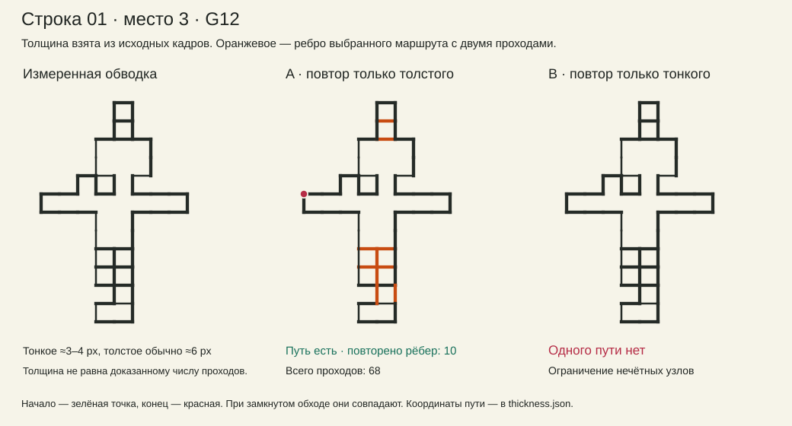
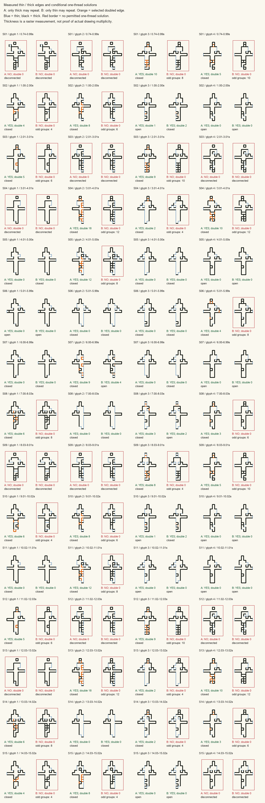
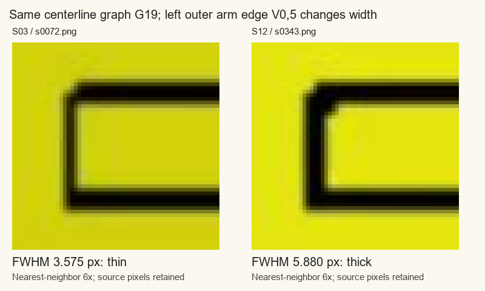
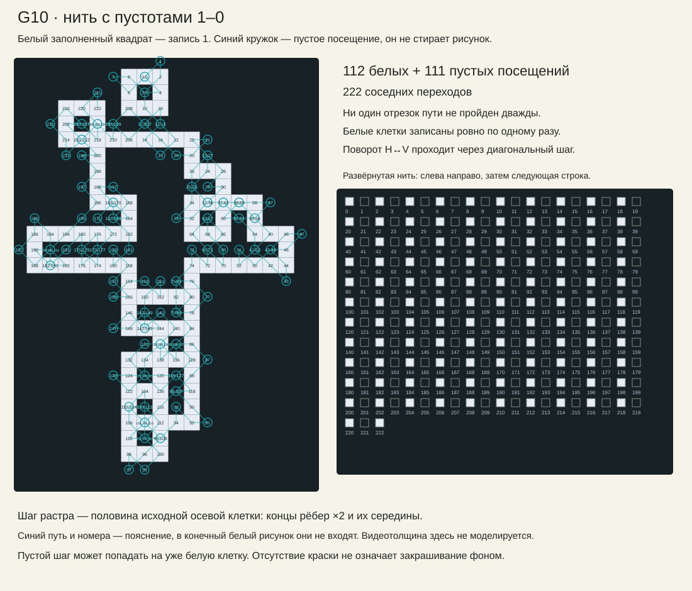

ЗЕРКАЛИУС / ИСС-108 / 14 НОЯБРЯ 2026
Толщина.
Повтор. Пустота.
Три варианта нити для тех же 45 форм. Повторы разрешаем по видимой толщине, а пустые шаги проверяем отдельно.
Что меняет правило
| Правило | Форм с одним путём | Что именно разрешено |
|---|---|---|
| Без повторов | 13 / 45 | Каждое видимое ребро один раз. |
| A · повтор на толстом | 36 / 45 | Тонкое — один раз; толстое — один или два. Все связные формы проходят. |
| B · наоборот | 16 / 45 | Толстое — только один раз; тонкое — один или два. |
| Нить 1–0 | 41 найдено; 4 пока неизвестно | Заполненный квадрат, пустой соседний шаг, снова квадрат. Половинный шаг осевой сетки. |
В A и B каждый исходный отрезок покрывается обязательно. Второй проход разрешён только указанному классу; третий запрещён. «Допускаем два» не означает «все такие отрезки обязаны пройти дважды».
Здесь толщина служит меткой разрешения повторить отрезок. Два точно совпадающих штриха сами по себе не становятся шире: при OR след остаётся, при XOR второй такой след гасится. Чтобы получать толщину именно от двух нитей, нужно отдельно задать их смещение или правило отрисовки кратности. Этого в проверку A/B не добавляли.
Для 60 мест в пятнадцати строках A работает в 49, B — в 21. В таблице выше считаются 45 разных осевых форм. Девять форм несвязны: повтор уже существующей линии не соединит отдельные части.

Оранжевое — рёбра, действительно удвоенные в построенном маршруте. Остальные проходят один раз. Нажми на схему для увеличения; все координаты маршрута сохранены в JSON.
Толщина видна в кадре
На 3188 отрезках-позициях выделяются два растровых класса: тонкие примерно 3–4 пикселя, основные толстые около 6. Встречаются и более широкие участки. Измеряем середины отрезков, не углы и не перекрёстки, по трём снимкам каждого состояния.
Между всеми измеренными поперечными сечениями остаётся промежуток 4,14–5,58 пикселя. Порог 4,7 лежит внутри него; класс не меняется ни между тремя снимками, ни между одиннадцатью сечениями. Ширину измеряем по половине контраста относительно местного фона. Это свойства имеющегося растра, а не доказательство числа нитей.

Одинаковый каркас, разная толщина
У G19 в строках 3 и 12 один и тот же отрезок V0,5 меняется примерно с 3,57 до 5,88 px. Поэтому прежний повтор этих строк точен для осевых рёбер, но не для всей обводки. Получилось 45 геометрий и 46 сочетаний «геометрия + толщина»; результат A/B у G19 от этой смены не меняется.

Почему повтор помогает
В каждой промежуточной точке нить должна войти и выйти. Поэтому число подходящих проходов там чётное; нечётными могут остаться только начало и конец. Повтор отрезка добавляет по одному проходу к двум его концам и меняет их чётность. Если разрешённые для повтора участки не связывают нужные нечётные узлы, один путь невозможен.
Это точная проверка для принятой модели: пересечения считаются общими точками, тонкие или толстые рёбра повторяются только по выбранному правилу. Для A достаточно связности всех исходных рёбер; именно на этих данных разрешённых толстых участков хватает для исправления чётности. В общем случае этого обещать нельзя.
Нить с пустотами
Сохраняем наши правила: 1 — заполненный квадрат; 0 — ничего не рисуем. Каждый соседний переход, в том числе диагональный, переключает 1/0. Прямой переход класса H↔V запрещён, между ними нужен диагональный шаг. Пустота не стирает ранее нарисованное.
Используем уже принятую клеточную конструкцию: концы осевых рёбер умножены на два, добавлены середины. Получается шаг в половину исходной клетки. Это не перенос видеопикселей и не моделирование двух толщин: отдельная проверка того, можно ли собрать клеточную форму чередованием заполненных и пустых квадратов.
В найденных путях каждая целевая клетка закрашена ровно один раз, ни один отрезок пути не повторён; точечные пересечения допустимы. Поэтому OR и XOR дают одинаковый конечный рисунок. Пустой шаг может пройти по уже белой клетке, ничего с ней не делая.
41 форм имеют проверенный маршрут. Для остальных 4 поиск достиг лимита; невозможность не доказана. При N белых клетках найденные маршруты имеют N−1 пустых посещений и 2N−2 перехода — минимальное число для такого чередования при старте и финише на 1.
Развернуть пример G10: пустые шаги соединяют раздельные видимые части

Все пятнадцать строк
В каждой ячейке первая ссылка открывает обводку и два варианта повторов. Вторая — отдельную схему нити 1–0. На узком экране таблица прокручивается вбок.


Проверки и исходники
Независимо проверены 70 маршрутов A/B, все найденные маршруты 1–0 и сертификаты невозможности A/B. Критерий разрешённых удвоений также сверен полным перебором 2186 малых задач. В данных остаются измерения, разрешённые и фактически удвоенные рёбра, последовательности вершин и результаты ограниченного поиска.
Толщины и маршруты A/B · Маршруты 1–0 · Независимая проверка · Контроль измерения и решателя
Метод и повторение · Все данные и код в GitHub
Источник изображения — заставка Kraftwerk live 2025 Coachella soundboard, канал Hotel Mario. Это проверка предложенных моделей, а не установление авторского алгоритма.